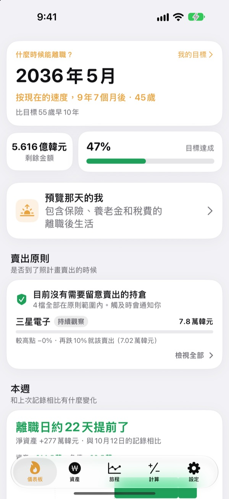
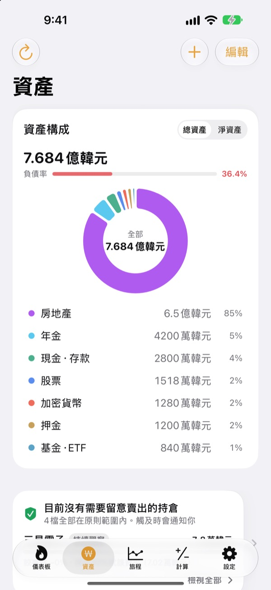
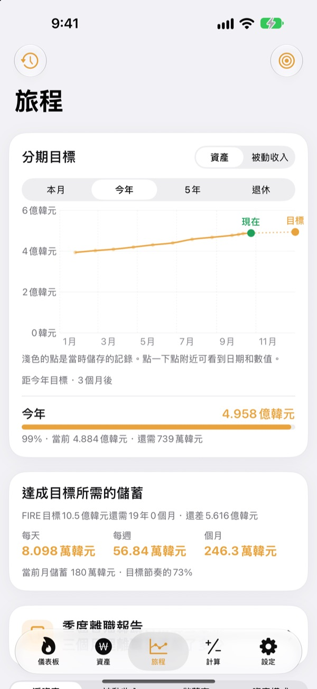
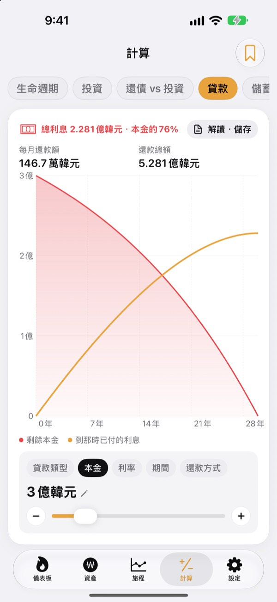

什麼時候能離職？
用數字說話
填好生活開銷和已經存下的錢，就能看到你可以離職的月份。資產每變動一次，都能馬上看出這一天是提前了還是延後了。
無需帳號即可開始，記錄儲存在此裝置上。

算算你的離職日
拖動滑桿試試，和App第一個畫面用的是同一套算法。
還在一遍遍地算「我現在能離職了嗎」？
銀行帳戶、證券帳戶、退休金、租屋押金各在一處，連自己到底有多少錢都說不清，什麼時候能離職自然也只能靠感覺。Toesagak把分散的資產彙整到一個畫面，並根據總額不斷重新計算你可以離職的月份。
分散的資產，一頁看全
房產、股票、基金和ETF、退休金、現金和存款、押金、加密貨幣乃至貸款，按類型彙整，顯示總資產、淨資產和負債比率。
股票和加密貨幣可取得行情來更新市值；擷取券商App的持股畫面，就能一次匯入持股和市值。

離目標，每天還差多少
本月、今年、五年和退休的分期目標與過往記錄，都在同一張圖裡。還會告訴你每天、每週、每月要存多少才能如期達成。
資產一有變動，當週記錄就會自動儲存，不用整理也能看到走勢。

重大決定前，先算一算
內含生命週期資產走勢、投資、還貸與投資比較、貸款、存款與定期定額、月薪購買力，以及把錢換算成時間的計算器。拖動數值，圖表立刻重繪，修改前的曲線以虛線保留，方便比較。
常用的條件可以命名儲存，隨時叫出。

三步就能開始
- 1
填寫開銷和年齡
大概的數字就夠了，馬上就能看到你的離職日。
- 2
逐項新增資產
分得越細，日期越準。
- 3
偶爾打開看看
每週記錄會自動累積，也可以在每月1日提醒你。
App的計算方式
- 目標金額
- 退休後一年開銷 ÷ 安全提取率（4%即25年的開銷）
- 離職時間
- 目前淨資產加上每月儲蓄，按預期報酬率成長後達到目標的月份
- 總資產
- 所有資產相加的總額
- 淨資產
- 總資產減去貸款等負債
- 達成率
- 淨資產 ÷ 目標金額。也可以按被動收入來看
- 可調整的項目
- 每月開銷、安全提取率2%至6%、預期年報酬率0%至12%、想要離職的年齡
所有結果都是根據你輸入數值的參考計算，不構成投資建議。
常見問題
我的記錄儲存在哪裡？
只儲存在這台裝置上。無需註冊，也不會傳送給開發者。在設定中開啟iCloud同步後，可透過你自己的iCloud帳號在iPhone和iPad上看到相同的記錄。
行情沒有更新。
美股、韓股、加密貨幣和匯率無需任何設定即可取得。請檢查網路連線，並確認股票代號填寫正確。公寓價格使用韓國的公開不動產資料，需要在設定中填寫免費的服務金鑰。
總資產和淨資產有什麼不同？
總資產是你擁有的全部資產總和，淨資產是總資產減去貸款等負債後的金額。離職時間按淨資產計算。
換新裝置時，記錄怎麼轉移？
在設定中用「匯出」產生備份檔案，存到「檔案」App、iCloud Drive或郵件裡，再在新裝置上還原即可。備份檔案不包含API金鑰。App也會自動在裝置上保留最近20份備份。
賣出提醒是怎麼運作的？
為每檔持股設定從高點回落多少，或設定目標價，觸及時就會提醒你。上漲時不會打擾你。行情會在打開App時，以及iOS允許背景執行時（通常每隔幾小時）檢查，因此不是即時監控。
能不讓別人看到我的數字嗎？
在設定中開啟App鎖定，就需要用Face ID或密碼才能打開。開啟後，每月提醒中也不會顯示任何數字。
可以先隨便看看嗎？
在設定中開啟演示資料，就能用虛構人物的資產瀏覽所有畫面。關閉後，你自己的記錄會原樣回來。開啟iCloud同步時無法使用演示資料。
怎麼刪除全部資料？
刪除App後，裝置上儲存的所有記錄都會一併刪除。如果想留一份，請先在設定中匯出備份檔案。
可以照著這些數字去投資嗎？
Toesagak的結果是根據你輸入的數值和假設報酬率得出的參考計算，不構成投資建議，實際結果會因市場和個人情況而不同。
問題回報、功能建議或任何疑問，請寄信至leeo@kakao.com。